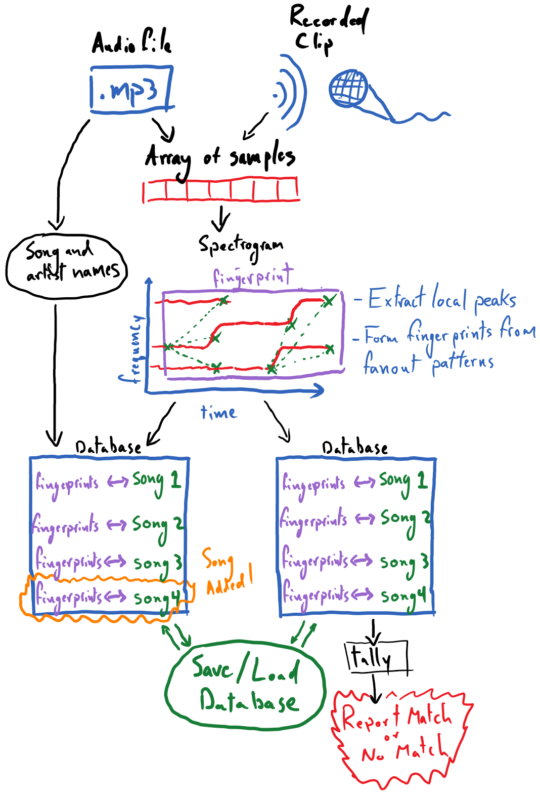

Capstone Project: Song Recognition¶
The capstone project for the audio module, as stated at its outset, is to create an installable Python package that can be used to recognize songs being played from brief clips of audio. The following is a diagrammatic overview of the capstone project that we will be developing; this conveys the major capabilities that the final product should have.

Many of the core pieces here were already developed in the reading and exercises for this module:
Converting various forms of audio recordings to numpy arrays of samples
Producing a spectrogram from the samples
Extracting local peaks from the spectrogram
These can be leveraged from the previous exercises nearly unchanged for this project. The process of forming “fanout” patterns among a spectrogram’s local peaks, and thus rendering a fingerprint for the recording, will require novel work from the reader. This was described in the section on “Matching Audio Recordings”. Developing code around our so-called database, which is rooted in a plain Python dictionary, will also require some creativity.
It is recommended that this capstone project be tackled as a group project among three to five students. While it is certainly doable for an individual to complete this project by theirself, there is great value participating in the collaborative process of divvying up the project and working to bring its various pieces together. Students are advised to use git and GitHub to work on a shared code base.
Capstone Tasks¶
It is strongly recommended that students work through this section of PLYMI (completing the reading comprehension exercises) to learn how they are to structure their code as an installable / importable Python package.
Groups might break tasks down along the following lines:
Creating functions for converting all variety of audio recordings, be them recorded from the microphone or digital audio files, into a NumPy-array of digital samples.
Creating a function that takes in digital samples of a song/recording and produces a spectrogram of log-scaled amplitudes and extracts local peaks from it
Creating a function that takes the peaks from the spectrogram and forms fingerprints via “fanout” patterns among the peaks.
Devising a scheme for organizing song metadata, e.g. associating song titles and artist names with a recording, and associating these with unique song-IDs to be used within the database.
Writing the core functionality for storing fingerprints in the database, as well as querying the database and tallying the results of the query.
Designing an interface for the database, including the following functionality:
inspecting the list of songs (and perhaps artists) that exist in the database
providing the ability to switch databases (optional)
deleting a song from a database (optional)
guarding against the adding the same song to the database multiple times (optional)
Recording long clips of songs under various noise conditions (e.g. some should be clips from studio recordings, others recorded with little background noise, some with moderate background noise, etc.) so that you can begin to test and analyze the performance of your algorithm.
Creating a function that can take an array of audio samples from a long (e.g. one minute) recording and produce random clips of it at a desired, shorter length. This can help with experimentation/analysis. For example you can record a 1 minutes clip of a song, played from your phone and then create many random 10 second clips from it and see if they all successfully match against your database.
Advice and Gotchyas¶
Configuration Parameters¶
There are several “tunable” aspects of the algorithm that we are implementing, such as the minimum amplitude threshold in peak finding. Here are some viable starting values for these; you can start with these and try experimenting with them to improve the performance of your song-matching algorithm:
Defining the local neighborhood for finding the peaks in the spectrogram: Use a rank-\(2\) connectivity-\(1\) binary structure, and iterate that structure \(20\) times (looks at roughly the \(15\) nearest bins as the neighborhood).
Finding an appropriate background/foreground amplitude threshold for identifying peaks in the spectrogram: this can be obtained for a given recording by identifying the ~\(75^\text{th}\) percentile amplitude and using that as the threshold.
Setting the size of the fanout pattern for forming the fingerprints: a fanout size of \(15\) nearest neighbors can be appropriate.
Spectrogram¶
For the spectrogram, it is advisable that students use matplotlib’s mlab.specgram function, which does not produce a plot by default.
import matplotlib.mlab as mlab
spectrogram, freqs, times = mlab.specgram(
samples,
NFFT=4096,
Fs=sampling_rate,
window=mlab.window_hanning,
noverlap=int(4096 / 2)
)
where samples is the NumPy array of audio samples and sampling_rate is the integer-valued sampling rate used to obtain samples (i.e. typically 44,100 Hz). The other settings determine properties about the size/properties of the FFT windows being using to produce the spectrogram; these should be held constant across recordings.
spectrogram is the shape-\((F, T)\) array of amplitudes, freqs is the shape-\((F,)\) array of frequency values corresponding to the vertical bins of the spectrogram and times is a shape-\((T,)\) array of time values corresponding to the horizontal bins of the spectrogram.
Before extracting peaks from the spectrogram, it is recommended that you take the logarithm of its values so that these amplitudes reflect the audible decibel scale. There may be zeros in the spectrogram, which will produces NaNs (Not-a-Numbers) when you take its logarithm. To avoid this, first replace all zeros in the spectrogram with a very small value, e.g. 1E-20, and then take the logarithm.
Analyzing and Testing Performance¶
Ideally, students will take time to analyze and characterize the performance of their algorithm. This means conducting experiments that vary one or multiple of the following:
the length of the clip being recording for matching (e.g. how short of a clip can be matched against the database?)
the noise level of the clip (e.g. how well does a studio-quality clip, low-noise clip, …, or very noisy clip match against the database?)
the number of songs in your database (e.g. does adding more songs to the database create “confusers” that cause false-matches)
Assess how these factors affect the reliability of your algorithm’s performance.
It is also a good idea to assess, in a quantifiable way, the quality of your algorithm’s matches. When your algorithm does produce the appropriate match, how large is the leading tally for this match? How much larger is the next-largest tally? How can you guard against false-matches? Perhaps you can intentionally try to match a clip from a song that does not exist in your database - does your algorithm predict a match regardless? Maybe there is a minimum tally that is necessary to help distinguish a false match from a true one. It may be that the ratio between the \(1^\text{st}\) and \(2^\text{nd}\) largest tallies can be an indicator of quality.
Feel free to tweak the tunable parameters, like the size/shape of your peak-finding neighborhood or the fanout-size of the fingerprint formation process, to improve the quality of your algorithm.
Finally, consider documenting the results of this analysis, providing visualizations of the data that led you to your conclusions.